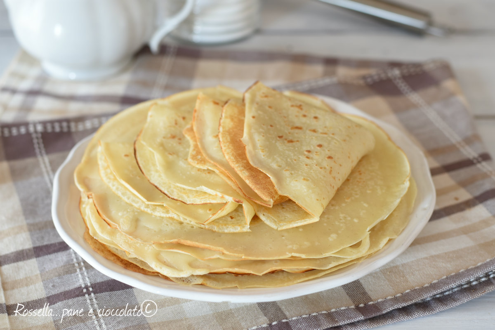

Crepes

Description
Crepes, originating from France, are thin pancakes made from a simple batter of flour, eggs, milk, and butter.
They are versatile and can be filled or topped with a variety of sweet or savory ingredients.
Ingredients
- 500g Milk
- 3 Medium Eggs
- 250g Flour
- 40g Butter
Steps
- Mix flour, eggs, milk, melted butter, and a pinch of salt until smooth.
- Heat a non-stick pan over medium heat. Pour a ladleful of batter into the pan, swirling to coat evenly. Cook for about 1-2 minutes until the edges lift and the bottom is golden.
- Flip the crepe and cook for another 1 minute until set.
- Remove from pan and repeat with remaining batter.